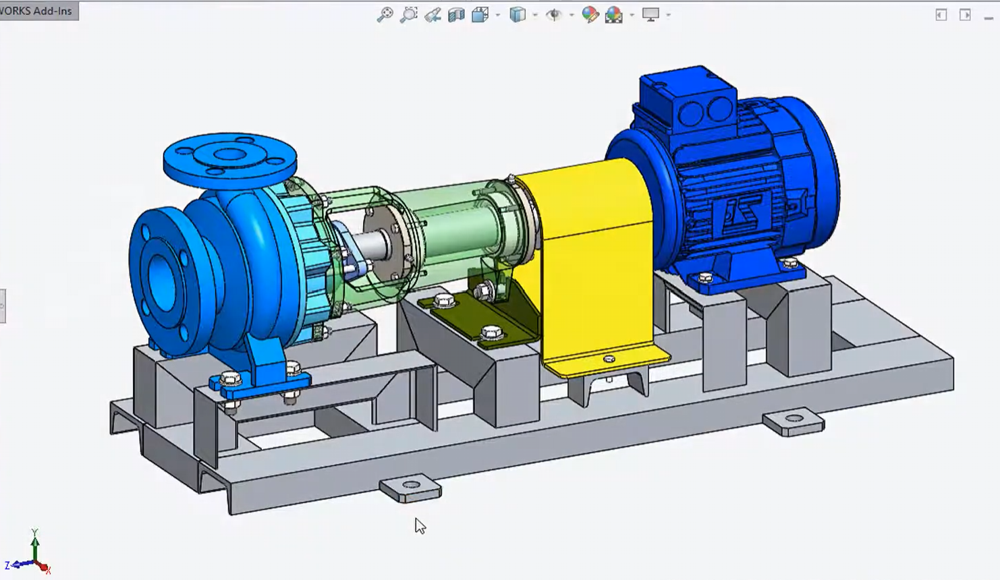

Work ExperienceSIMS Pump Valve Company — Mechanical Engineering Intern
Interned at an industrial pump manufacturing company where I worked across the full product lifecycle — from design to quality control. I created and revised CAD models for custom pump components in SOLIDWORKS, performed 3D scanning and reverse engineering of damaged parts using Artec Studio, and conducted dimensional inspections using precision instruments including calipers, micrometers, and thread gauges. This experience gave me hands-on exposure to real manufacturing workflows and the engineering documentation that supports them.